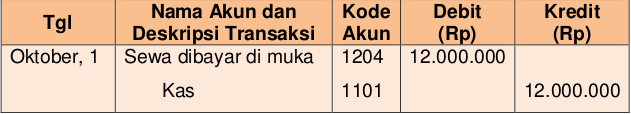

TRANSAKSI BEBAN DIBAYAR DI MUKA
Perusahaan telah membayar uang untuk menggunakan “sesuatu” (berarti beban) namun pada saat pembayaran, perusahaan belum menggunakan atau memanfaatkannya, sehingga uang perusahaan berkurang, aset (membayar Beban namun belum dinikmati) bertambah. Akun-akun dalam aset tersebut misalnya: sewa dibayar di muka, asuransi dibayar di muka, iklan dibayar di muka, dan lain-lain. . Terdapat dua alternatif untuk mencatat beban dibayar di muka, yaitu dengan menggunakan pendekatan Neraca atau pendekatan laba/rugi. Jika pencatatan menggunakan pendekatan neraca maka beban dibayar di muka dianggap sebagai aset, sedangkan jika pencatatan menggunakan pendekatan laba/rugi beban dibayar di muka langsung dianggap sebagai beban.
Perhatikan contoh berikut ini!
Tanggal 1 Desember 2017 Perusahaan membayar sewa bangunan untuk satu tahun kedepan senilai Rp12.000.000, 00.
a.Pencatatan menggunakan pendekatan neraca
b. Pencatatan menggunakan pendekatan Laba/rugi